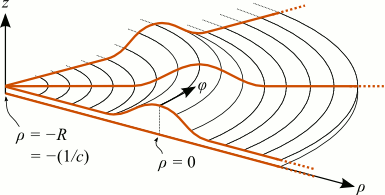

What is wgms3d?
wgms3d is a freely available software tool that calculates the modes of dielectric electromagnetic
waveguides.
For example, you can analyze:
- integrated-optical waveguides such as silicon / SOI waveguides, as well as optical fibers,
- rectangular (metal-pipe) waveguides with dielectric insets,
- waveguides with active and lossy dielectrics,
- leakage losses due to waveguide curvature and / or frustrated total internal reflection (ARROW waveguides,
substrate leakage).
This software can currently not handle photonic-crystal waveguides, metallic insets, or curved
metallic boundaries.
Features
- The waveguide is assumed to have a piecewise constant refractive-index
profile (a "step-index" profile), i.e., the waveguide cross section can consist of several adjacent
regions of constant refractive index. The interfaces between these regions do not need to coincide with the
discretization grid: dielectric interfaces may be straight (under any
arbitrary angle) or curved (as in optical fibers).
- The dielectrics are assumed to be isotropic and
non-magnetic. Lossy materials are supported in the form of
materials with complex refractive indices.
- The entire waveguide may be curved along the propagation direction,
thus enabling the computation of bending or curvature losses. The simulation is based on cylindrical
coordinates adapted to the waveguide curvature and does not rely on the widespread approximate
equivalent-straight-waveguide model.
- By default, the computation is fully vectorial. It does not make
any a-priori assumptions about the magnitude of the six electromagnetic field
components. Approximate scalar or semi-vectorial calculation modes may optionally be enabled by
the user.
- The four edges of the rectangular computational domain are enclosed by perfectly electrically or
magnetically conducting walls. These walls may be padded with Perfectly
Matched Layers in order to absorb outgoing radiation and thus simulate leakage and curvature
losses.
The software is written in C++ and uses the ARPACK
and SuperLU libraries to solve the discretized
eigenproblem. It should compile under any Unix-like operating system. Scripts for post-processing and
visualization of the results in GNU Octave
and Matlab are provided.
wgms3d is free software under the GNU
GPL.
News
- 17-May-2014: Released v2.0.
- Introduced a new parallel / distributed eigensolver backend based on MPI
/ PETSc / SLEPc
for large-scale simulations. This work was inspired by initial experiments done by Henry Wu with
pwgms3d.
- Can choose during configuration stage whether to use the new MPI-based parallel eigensolver backend or
the old one based on SuperLU / ARPACK.
- Fixed some of the Matlab scripts for compatibility with GNU Octave.
- 01-Dec-2013: Thanks to Henry Wu, there is a parallelized version
of wgms3d-1.2 now. It is based on the SLEPc eigensolver library
and can be significantly faster than the ARPACK-/SuperLU-based code. Until his changes have been merged into
the main wgms3d branch, you can download his version of
wgms3d here. Use it at your own risk; no in-depth comparison of the
results of old and new wgms3d have been performed yet.
- 22-Sep-2013: Released v1.2.2.
- Fixed source code so that it better complies with the C++11 standard. (Thanks to Zhanghua Han for
pointing out a compilation problem.)
- 17-Aug-2013: Released v1.2.1.
- Updated installation instructions and build script for
the ARPACK-NG library distribution. It is no
longer recommended to use my old self-packaged and slightly modified version of ARPACK. This simplifies
installation and makes wgms3d work on platforms where it didn't work before (thanks to Thach Nguyen
for the reports).
- 9-Jul-2012: Released v1.2. Major changes:
- In the semi-vectorial calculation mode, derived fields (transverse E field + longitudinal E and H
fields) can now be exported. Also, added a new test script 'tests/semivectorial/', which compares
the full-vectorial (exact) and semi-vectorial (approximate) modes in a waveguide at different
wavelengths. As expected, the error of the SV approximation becomes smaller towards shorter
wavelengths.
- Added a new test script 'tests/complex_modes/'. It checks whether complex modes are calculated
correctly by reproducing the effective-index data from Fig. 4b of Strube's 1985 MTT article.
- Extended the script 'matlab/wgms3d_mgp_rib_waveguide.m'. It can now generate strip waveguides
or "photonic wires", too. Just set the etch depth D to the same value as the central rib height H. See
documentation inside that script.
- Fixed the script 'matlab/wgms3d_plot_refractive_index.m'. It now correctly
loads 'epsis.bin' instead of 'epsis.txt'.
- Fixed handling of comment lines in MGP files (those starting with a '#' sign).
More detailed information on what has changed between releases may be found in the text files NEWS
and ChangeLog inside the distribution. If you want to be notified about future updates, consider
subscribing to the project on freecode.
Method
The software implements a finite-difference method that is based on ideas proposed in
- Y.-C. Chiang, Y.-P. Chiou, and H.-C. Chang, "Improved Full-Vectorial
Finite-Difference Mode Solver for Optical Waveguides With Step-Index Profiles," J. Lightwave Technol.,
vol. 20, no. 8, pp. 1609–1618, Aug.
2002. [PDF]
wgms3d is based on a generalization of the concepts of Chiang et al. to curved waveguides and employs a
simplified formulation. The details are described in
- M. Krause, "Finite-Difference Mode Solver for Curved Waveguides with
Angled and Curved Dielectric Interfaces", J. Lightwave Technol., vol. 29, no. 5, pp. 691-699
(2011). [PDF]
Please cite the latter paper in your own articles if you found this software useful for your research.
References
wgms3d (and predecessors) have been used since 2004 in several research projects of
the OKT group at TUHH and by collaborators. Some
articles making use of the results of this mode solver are
- I. Giuntoni, D. Stolarek, J. Bruns, L. Zimmermann, B. Tillack, K. Petermann, "Integrated Dispersion
Compensator Based on Apodized SOI Bragg Gratings", IEEE Photon. Technol. Lett. 25(14), pp. 1313-1316
(2013) [PDF]
- D. Jalas, A. Petrov, M. Krause, J. Hampe, M. Eich, "Resonance splitting in gyrotropic ring resonators",
Opt. Lett. 35(20), pp. 3438-3440
(2010) [PDF]
- M. Krause, H. Renner, E. Brinkmeyer, "Strong enhancement of Raman-induced nonreciprocity in silicon
waveguides by alignment with the crystallographic axes", Appl. Phys. Lett. 95(26), #261111
(2009) [PDF]
- M. Krause, H. Renner, S. Fathpour, B. Jalali, E. Brinkmeyer, "Gain Enhancement in Cladding-Pumped Silicon
Raman Amplifiers", IEEE J. Quantum Electron. 44(7), pp. 692-704
(2008) [PDF]
- M. Krause, H. Renner, E. Brinkmeyer, "Polarization-Dependent Curvature Loss in Silicon Rib Waveguides",
IEEE J. Sel. Top. Quantum Electron. (Special Issue on Silicon Photonics) 12(6), pp. 1359-1362
(2006) [PDF]
The development of this software was supported by Freie und Hansestadt Hamburg under grant "Hybride
Mikrophotonik" and by the Deutsche Forschungsgemeinschaft (DFG) within
Forschergruppe
FOR 653.